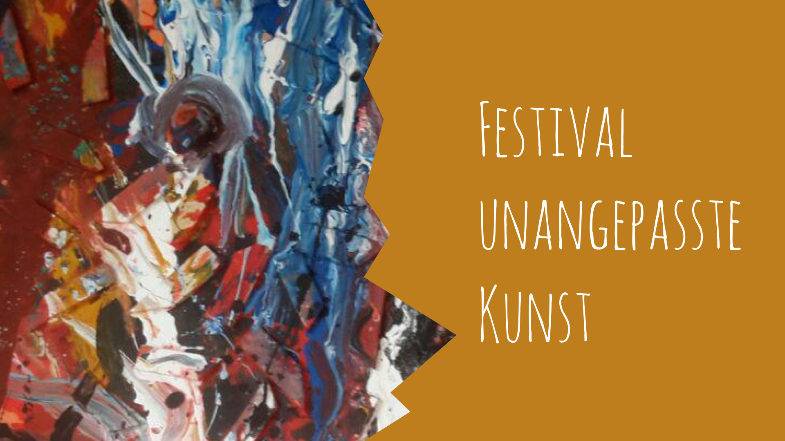
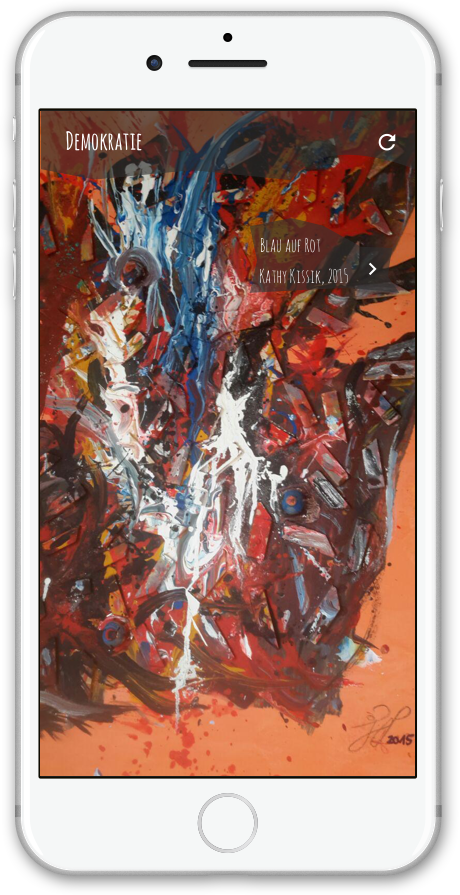
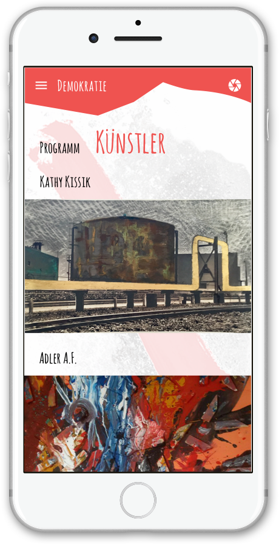
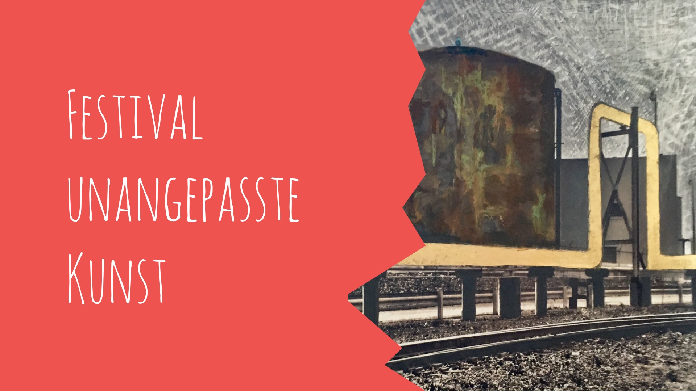

<section>

  <project-intro [select]="'festival'"></project-intro>
  <div class="Picture-Container">
    
    <div class="Picture-Caption">A poster for the festival</div>
  </div>
  <div class="Picture-Container--multiple Background-light">
    <h3>Democracy, power, and participation</h3>
    
    
    
    <div class="Picture-Caption">The app design captures the unadjusted spirit of the festival</div>
  </div>
  <div class="Picture-Container">
    
    <div class="Picture-Caption">A poster for the festival</div>
  </div>
  <project-navigation [index]="1" [next]="'frozen-sea'"></project-navigation>
  <app-footer [project]="'festival'"></app-footer>

</section>
